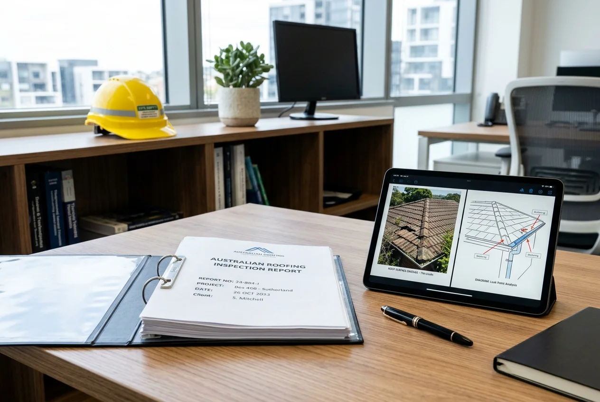

Frequently Asked Questions.
Clear, direct answers regarding inspections, storm damage assessments, Colorbond® replacements, and insurance claim rights.

Free Roof Inspections
Is the initial roof inspection genuinely 100% free?
Yes. Civic Restoration Group provides completely free roof inspections for Queensland property owners. There are zero call-out charges, zero hidden fees, and zero obligation to proceed with any repairs afterward.
What will the photographic report show me?
Within 48 hours of our visit, you receive a clear digital report containing high-resolution photos of roof surfaces, flashings, valley irons, gutters, and ridge capping, accompanied by plain-English recommendations.
Do I have to be home during the inspection?
No, as long as our licensed inspector has safe perimeter access around your property for ladder placement. If you are experiencing interior leaks, however, having someone present allows us to inspect internal watermarks too.
Storm & Hail Damage
How can I tell if my roof has hail damage from the ground?
Hail damage is rarely visible from ground level. Look for secondary signs such as dented metal gutters, downpipes, air conditioning condenser units, or chipped tile edges. If severe hail struck your area, an inspection is recommended.
Can hail damage cause problems even if my ceiling isn't leaking?
Yes. Hail strikes bruise the protective coating on steel roofing, which accelerates corrosion and rust. On tile roofs, hail fractures mortar bedding and creates hairline cracks that fail during subsequent storms.
Colorbond® Replacement
Do you install genuine BlueScope Colorbond® steel?
Yes, exclusively. We install 100% genuine Australian BlueScope Colorbond® steel engineered for Queensland’s harsh heat, storms, and coastal salt environments. We never use cheap unbranded imported sheeting.
How long does a full roof replacement take?
Most residential replacements are completed within 2 to 4 working days. We work in controlled daily stages and monitor weather radars carefully so your home is always fully protected.
Do you repair roofs or only replace them?
Both. If your roof only requires targeted maintenance—such as re-pointing ridge caps, resealing a vent flashing, or replacing a rusted valley—that is exactly what we recommend. We only suggest replacement when damage is widespread.
Insurance Claim Support
How do you help with insurance claims?
We provide the detailed photographic evidence and itemised scope of works that insurers require. Together with our independent partner, Claims Approved, we assist you through claim lodgement and assessor reviews.
What areas of Queensland do you service?
We service properties across South East Queensland (Brisbane, Gold Coast, Sunshine Coast, Ipswich, Logan, Moreton Bay, Redlands) as well as the Darling Downs (Toowoomba) and regional Queensland centers.